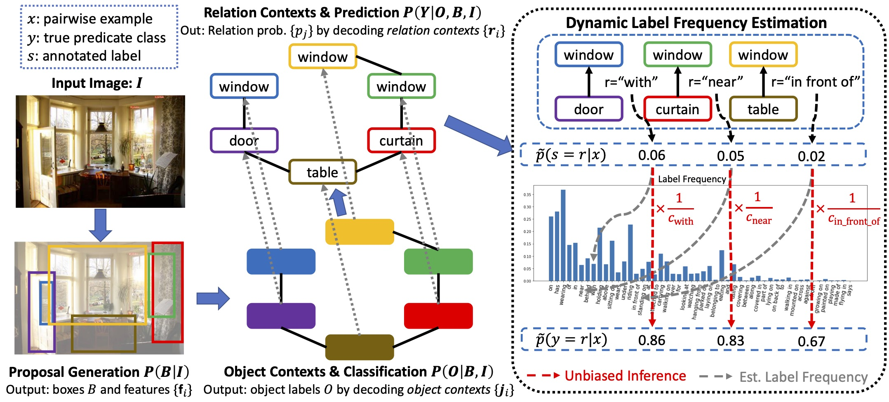
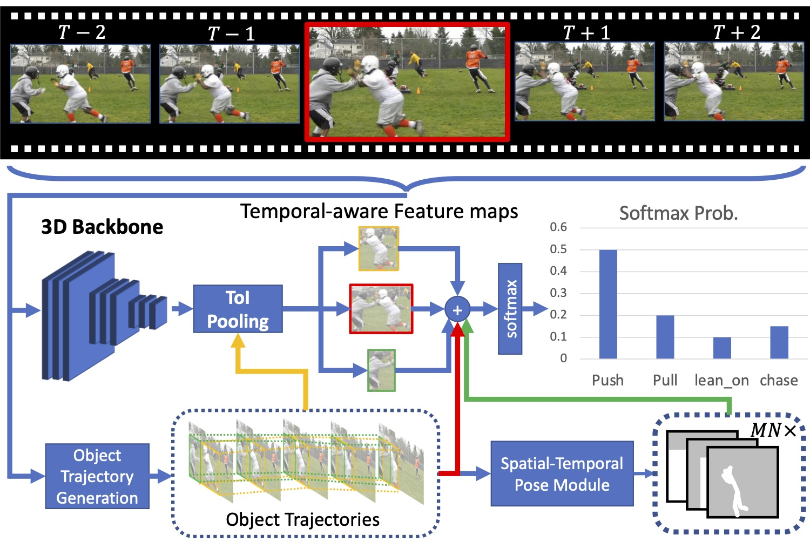
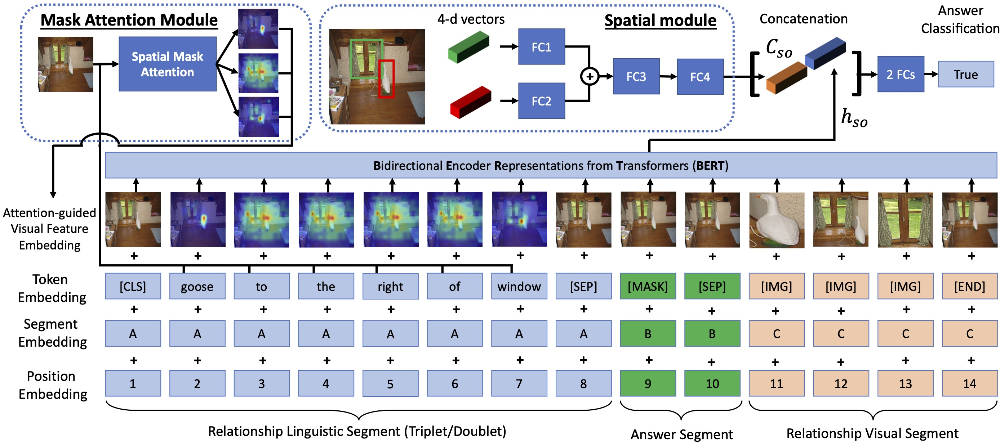
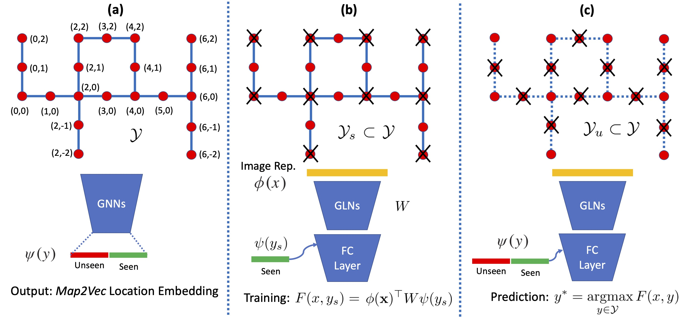
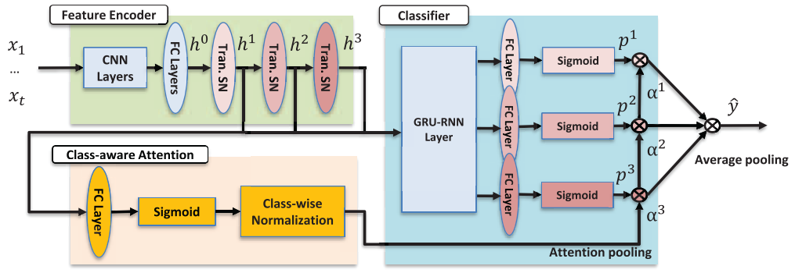
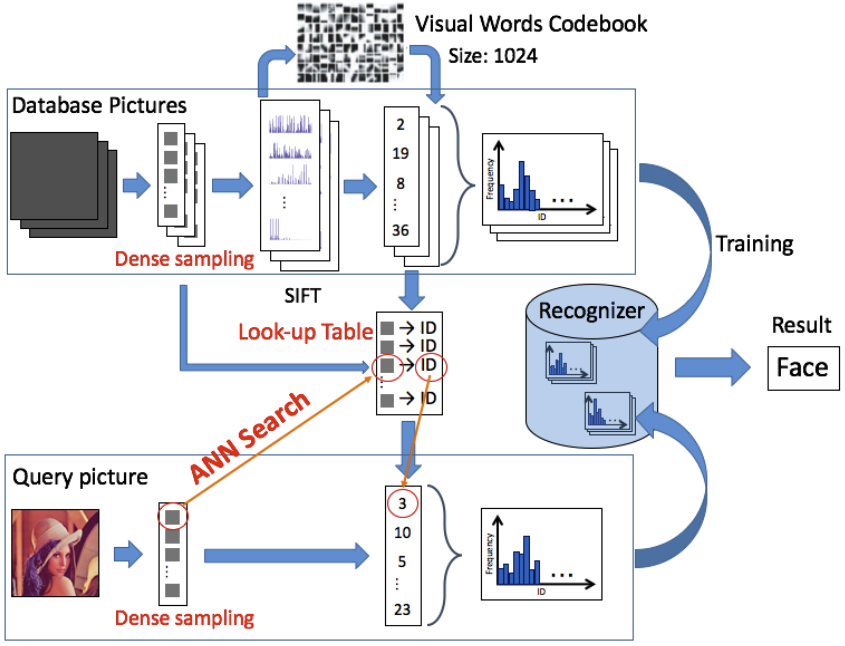

News
- Jul. 4, 2021: A first-authored paper "Recovering the Unbiased Scene Graphs from the Biased Ones" is accepted by ACMMM 2021! The source code is publicly available here.
- May 16, 2021: A first-authored paper "ST-HOI: A Spatial-Temporal Baseline for Human-Object Interaction Detection in Videos" is accepted by ICMR'21 Workshop on Intelligent Cross-Data Analysis and Retrieval!.
- Mar. 22, 2021: A first-authored paper "Visual Relationship Detection with Visual-Linguistic Knowledge from Multimodal Representations" is accepted by IEEE Access! The source code has been released here.
- Oct. 10, 2020: My research internship at ASUS AICS has ended with publishing a technical paper!
- Jul. 26, 2020: A first-authored paper "Zero-Shot Multi-View Indoor Localization via Graph Location Networks" is accepted by ACMMM 2020! The code and datasets have been released here.
- Jun. 08, 2020: I start a research internship at ASUS AICS about video-based human-object interaction!
- Jul. 02, 2019: Our paper "Multi-Level Fusion based Class-aware Attention Model for Weakly Labeled Audio Tagging" is accepted by ACMMM 2019!
- Apr. 25, 2019: Ranked 23/1028 (top 2.2%) Python developers in Singapore on GitHub! [Source] [Picture]
- Feb. 22, 2019: A talk on literature review of visual reasoning with scene graph [Slides] in LV lab meeting.
Education
National University of Singapore
Ph.D. in Computer Science• Aug. 2017 - Present
I am working on visual scene understanding and reasoning (esp. scene graph generation) with Prof. Roger Zimmermann at Media Management Research Lab and Prof. Jiashi Feng at Learning and Vision Lab.National Chiao Tung University
B.Sc. in Electrical and Computer Engineering• Sep. 2012 - Jun. 2016
I graduated from the Dep. of Electrical and Computer Engineering, National Chiao Tung University (NCTU) with superb GPA 3.9 with multiple scholarships awarded. Note, NCTU is now National Yang Ming Chiao Tung University.
The University of Tokyo
Exchange Student at Info-Comm Engineering• Oct. 2014 - Sep. 2015
I joined Department of Information and Communication Engineering, The University of Tokyo as an exchange student for an year. Working closely with Prof. Toshihiko Yamaski, I did research in efficient image classification.
Experience
Research Intern, Computer Vision
ASUS Intelligent Cloud Services•Jun. 2020 - Oct. 2020•Singapore
I worked on video-based human-object and human-human interaction for the smart retail initiative.
Research Assistant
Academia Sinica• Dec. 2015 - Apr. 2016•Taipei, Taiwan
I worked on image segmentation at Multimedia and Machine Learning LAB in Academia Sinica.

Microsoft Student Partners, Software Eng.
Microsoft• Jul. 2013 - Jun. 2014•Taipei, Taiwan
I worked as MSPs at the Software Development Group in Microsoft Taiwan. I developed Windows Apps (e.g., NHK Reader with 7,000+ downloads) and spoke publicly to university students to promote the latest techniques.
Papers
-
Meng-Jiun Chiou, Henghui Ding, Hanshu Yan, Changhu Wang, Roger Zimmermann and Jiashi Feng, “Recovering the Unbiased Scene Graphs from the Biased Ones”, in Proceedings of the 29th ACM International Conference on Multimedia (ACMMM'21), 2021. [Paper] [Slides] [Code]
Meng-Jiun Chiou, Chun-Yu Liao, Li-Wei Wang, Roger Zimmermann and Jiashi Feng, “ST-HOI: A Spatial-Temporal Baseline for Human-Object Interaction Detection in Videos”, in Proceedings of the 2021 International Conference on Multimedia Retrieval (ICMR'21) Workshop on Intelligent Cross-Data Analysis and Retrieval, 2021. [Paper] [Slides] [Video] [Code]
Meng-Jiun Chiou, Roger Zimmermann and Jiashi Feng, “Visual Relationship Detection with Visual-Linguistic Knowledge from Multimodal Representations”, in IEEE Access, vol. 9, pp. 50441-50451, 2021. [Paper] [Code]
Meng-Jiun Chiou, Zhenguang Liu, Yifang Yin, An-An Liu and Roger Zimmermann, “Zero-Shot Multi-View Indoor Localization via Graph Location Networks”, in Proceedings of the 28th ACM International Conference on Multimedia (ACMMM'20), 2020. [Paper] [Slides] [Poster] [Video] [Code]
Yifang Yin, Meng-Jiun Chiou, Zhenguang Liu, Harsh Shrivastava, Rajiv Ratn Shah and Roger Zimmermann, “Multi-Level Fusion based Class-aware Attention Model for Weakly Labeled Audio Tagging”, in Proceedings of the 27th ACM International Conference on Multimedia (ACMMM'19), 2019. [Paper]
Meng-Jiun Chiou, Yamasaki Toshihiko and Aizawa Kiyoharu, “A Fast Table-Based Approach of Bag-of-Features for Large-Scale Image Classification”, in Proveedings of the ITE Annual Convention, The Institute of Image Information and Television Engineers, 2015. [Paper]

Services
Program Committee, CVPR 2018 Workshop on Visual Understanding of Humans in Crowd Scene (VUHCS)
-
Reviewer,
-
Teaching Assistant,
Skills
- Programming:
- Proficient at PyTorch (for deep learning), Python, C++, and Matlab.
- Experience at Java, HTML, CSS, Javascript and Linux/Unix.
- Languages: Mandarin Chinese (native), English (business level; TOEIC/TOEFL certified) and Japanese (business level; JLPT N1 certified)
Miscellaneous
-
- One of my photo won WAttention Photo Contest Spring 2016 (the 6th photo).
- I was awarded Honorable Mention at the 8th Sumika Japanese Speech Contest.
{kind=link}